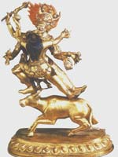

Яма, в індійській міфології володар царства мертвих, люте божество, син сонця Вівасват і брат Ману, єдину людину, яка пережила великий потоп; його сестра і супутниця, а також втілення його творчої енергії - Ями. Вважається, що брат і сестра - перші люди, а Яма - "перший, хто помер". Відповідно до одного переказами, Яма вирушаючи пізнавати світ, потрапив на небо, і люди стали смертними.
Милостивий Яма давнину з часом перетворився в зловісну і руйнівну силу. Люди представляли його собі зеленокожім, збройним петлею і булавою, в супроводі двох чотириокого собак, які бродять по світу, збираючи душі померлих. Стародавні вважали, що, покинувши тіло, душа прямує за річку Вайтарани в країну мертвих, де їй належить з'явитися перед судом. Там Яма зачитував список діянь душі, після чого виносив вирок. Душа відправлялася в рай, в один з пекла або поверталася в країну живих, де вона мала відродження.
Відповідно до одного з міфів, дочка царя Мадре Савитри просила Яму повернути їй чоловіка Сатьявану. Бог був зворушений і запропонував Савітрі виконання будь-якого бажання, якщо вона більше не буде просити про відродження Сатьяван. Савітрі побажала народити синів від чоловіка, і Яма повернув їй Сатьявану. У буддійської міфології Яма - владика пекла, колишній правитель міста Вайшали. Вісім полководців і 80 000 воїнів супроводжували царя в загробний світ, де три рази в день йому в глотку вливали розплавлену мідь. Покарання тривало до тих пір, поки Яма не викупить всі свої гріхи. Ставши володарем пекла, Яма насилав на людей хвороби і старість. Ями, сестра Ями, правила пеклом жінок і розглядалася як втілення його творчої енергії (Шакті).